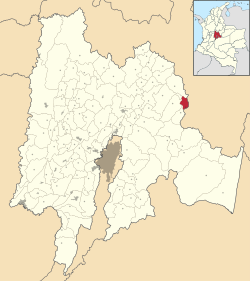
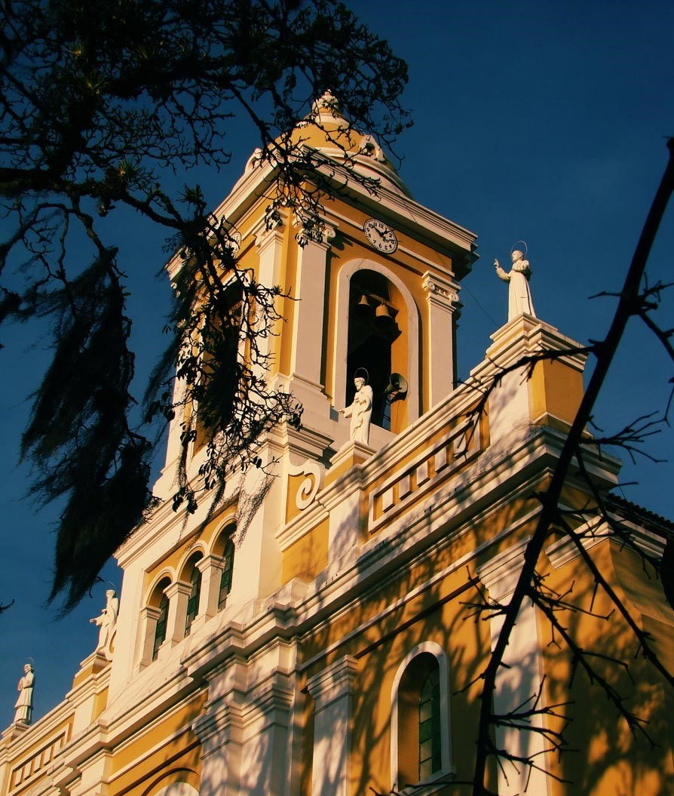
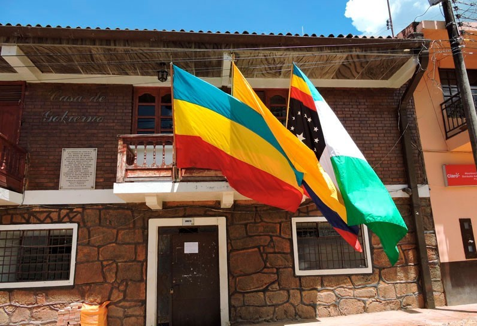

Espacio Físico
Ubicado en los límites del departamento de Cundinamarca hace parte del valle de Tenza. Dada esta geografía y la cultura usualmente se suele usar el termino cundiboyacense, el cual aplica a la perfección para describir este pueblo en muchos de sus aspectos.
Iglesia
Para tener la más bella iglesia colonial, demoraron 200 años, y hasta el día de hoy la siguen decorando, no es solo una estructura religiosa, es un icono artístico y arquitectónico para la región que hay que apreciar.
En las columnas del templo se ven pinturas de los 12 arcángeles en estampas juveniles. Esta es una ermita sobria, elegante, resplandeciente.En el baldaquino central se eleva la imagen del Resucitado y en un altar lateral está la Virgen de los Dolores, patrona de la parroquia. Fuera de las tallas doradas en las puertas de madera y las imágenes tan dramáticas del vía crucis, hay que destacar el mosaico del piso, antiguo y con diseños únicos.
Alcaldía
En este edificio se encuentra el despacho del alcalde y de las secretarías del municipio
Volver al inicio